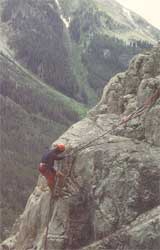

WILDERNESS SKILLS SCHOOLS, PART II:
It's first week of June, and a chartered bus carrying 40 Outward Bound students is rolling down a highway paralleling the Blue River in central Colorado. At this time of year the Blue is flowing thick and muddy with snowmelt from the Gore and Ten Mile mountains. Towering above the valley floor are the sublime snow-covered summits that make up the two ranges. These mountains are rugged, some of the steepest in the state, but from a distance they appear to be no more than big rolling hills.
Eighty anxious eyes peer through the tinted bus windows as the students try to imagine what their Colorado Outward Bound School (COBS) experience will entail. The bus continues on its journey from Denver, where the students boarded three hours earlier, heading deeper into a majestic and remote country.
Waiting at a campground on the Blue River are nine COBS instructors, of which I am one. We laugh and joke around, trying to sustain a light and carefree atmosphere. Yet this is the first and most difficult day of a 23-day mountaineering course, and the moment the bus arrives we go to work.
"Here it comes!" someone shouts.
"Here we go!" announces Paul, the course director. Paul is responsible for eight instructors and the 40 students bearing down on us now.
When the bus pulls into the campground and has rolled to a stop, Paul darts through its doors before the students have a chance to disembark from their last link to the civilized world for the next 23 days. He greets them and gives a brief overview of the course, telling them everything they'll need to know to make it through the first hour of their Outward Bound experience: Change into shorts and running shoes, toss your luggage onto the waiting pickup truck, and leave all tobacco, booze and drugs behind.
Forty students file off the bus behind Paul. Some look excited, some tired, others bewildered.
"OK, we're gonna start things off with a little run up this road here," Paul an nounces as he points up a steep dirt road that wind its way into a forest of spruce and aspen. A few mumbles are heard among the students: "What is this guy, nuts?" "What have I gotten myself into?" After leading the students through a few warm-up stretches, one of the instructors leads off up the hill. Behind him the 40 students, most of whom aren't acclimated to the 8,000-foot elevation, shuffle off in a pack that strings out into a long line of runners, walkers and wheezers after only a few hundred feet.
This kickoff run of a mile or so is an Outward Bound tradition. In addition to being the first activity of the course, it sets the pace for the three strenuous weeks to come and gives the students a basis against which to gauge their physical improvement. Twenty-three days from now, the course will conclude with a second run, the "Outward Bound Marathon," which is 10 miles long. During that final run, most of the students think about how they felt on this little jog and can see the improvement that three weeks of rigorous living have made in them.
The run ends in a grassy meadow beside the road. Here the course and staff are formally introduced. Along with the instructors' names, Paul gives a little background on each. Their credits are impressive and diverse - one instructor has summitted on Mt. Everest, another's wilderness and leadership experience ranges from expeditions in Peru to working with juvenile delinquents in Manhattan, and a couple of the others have extensive experience as outdoor skills instructors in the mountains and deserts of the American Southwest.
After the instructor introductions, the students are split up into four groups, or "patrols," each of which is supervised by a pair of instructors. My assistant will be John, a burly and jovial character with three years of instructing experience for the North Carolina Outward Bound School.
John and I take our 10 students over to a shady corner of the meadow and have them sit in a circle. We tell each other our names and a little about ourselves. In this group I have, among others, a self-assured 27-year-old fellow from New York who can't wait to start climbing rocks and mountains, an 18-year-old girl who has never had wants to learn about camping, and another young lady who just wants to experience three weeks of wilderness living. On the whole, not a bad lot.
We spend the rest of the morning and part of the afternoon fitting out with equipment and supplies. Outward Bound provides the food and gear for all of its courses; students need bring only clothing, boots and a can-do attitude. By midafternoon we're moving up a trail leading into the Gore Range.
After a couple of hours of hiking with a few breaks to treat blisters, we stop to camp for the night on the top of a hill, near a pond set back in the trees.
Beginning the first night and continuing throughout the course, John and I will instruct our students in camping skills and backcountry etiquette. I place heavy emphasis on low-impact camping. The first thing I teach is to pack all garbage in bags and save it for our first resupply rendezvous, when we'll hike back down to the road to meet a supply truck. With the number of people we bring into these mountains each summer - not to mention all those who visit on their own - the countryside would soon be a mess if we didn't take care to impact the environment as lightly as possible.
The sun is setting, so John instructs five students - tonight's kitchen crew - in the safe use of backpack stoves so that they can get dinner cooking. I show the other five how to set up the three 9' X 9' tarps that will be our shelter for the duration of the course.
"You mean we don't have tents?" asks Bill, the outspoken fellow from New York.
In answer, I demonstrate how a tarp can be pitched to provide a shelter that's every bit as effective as a tent, even above treeline, where we'll be camping during most of the course. "Tarps are less expensive, easier to repair and lighter than tents," I explain. The doubtful New Yorker doesn't buy it. "Don't worry," I assure him, "you'll get used to it."
With the three tarps set up in three different configurations, the housing crew walks over to join the cooks for dinner. John has shown them how to make pizza using flour and baking powder for dough. After a good meal, we clean up and turn in for the night.
During the next few days we make frequent stops along the trail to conduct impromptu classes in the various skills the patrol will need to make it safely and comfortably through the rest of the course. I spend an afternoon giving a class in land navigation. After two hours of looking at topographic maps, pointing out mountain features and constructing crude relief maps on the ground using rocks and climbing helmets to represent terrain features, I begin to get the feeling that little of it has sunk in. The hex is broken when Debbie, the girl who had never before camped, points to a peak at the end of the valley and asks, "Is that mountain over there this circle on the map?"
"Yes," I reply, surprised and impressed.
"Then that pass next to the mountain must be these parallel lines on the map." She's right again. I look over to John and he gives me the thumbs-up sign and a big smile. All right, I think; these guys are catching on.
The sixth day is a long one. We hike down to drop off our accumulated trash and replenish our food, fuel and first-aid supplies at the waiting truck. Afterwards, we head up another trail toward Slate Creek Valley, five miles to the north.
This first resupply signals the end of the initial, or training, phase of the four-phase course. Now begins my favorite part - the alpine expedition phase. During the next 10 days we'll make two technical peak as cents, enjoy two days of rock climbing, bag three passes and finish off with three full days of solo - a time that each student will spend entirely alone.
The training now becomes technical: rope handling, rock climbing and self-arrest with ice axes will occupy the majority of our time, though we'll continue to review the essentials of backcountry living and travel - first aid, land navigation and emergency procedures. That way, I know my students will be ready for the fourth and final phase, or "finals" - an unescorted four-day trek over the Gore Range.
Lunch break on day six is a picture of lethargy . . . until the students discover the fresh-baked brownies stashed in their food packets (courtesy of Cindy, the COBS logistics coordinator). The sweet treats help to lift sagging spirits.
That evening, figuring it's time to talk about some minor problems I can see developing, we sit down for a couple of hours to hash out the frustrations that have been building under the weight of our heavy packs and the stresses of the past week.
Next morning I dress up like an Indian, hoping to ease some of the tensions that may be lingering from my frank critique of the night before. In war paint, I conduct a class on rope handling and belaying skills. Everyone seems to pick the basics up fairly quickly - though there are a few John and I will have to keep our eyes on. After the class we move to an outcropping of granite where we spend the rest of the day climbing.
The remainder of the alpine expedition phase goes well enough, though we get rained out of one of our peak as cents as well as a second day of rock climbing. But spirits lift with the beginning of phase three, or "solo." Now the students will go their separate ways to rest, relax and reflect for three full days and nights. For those students not accustomed to being alone for any length of time - much less alone in the wilderness-solo often proves to be the most meaningful portion of the Outward Bound experience.
Then, once solo ends, the fourth and final stage begins. After John and I gather the students from their solo sites, we debrief, eat a quick meal and hightail it down the Pine River Valley to a campground designated for rendezvous with the other three patrols, whom we haven't seen for more than two weeks. Here Paul, the chief instructor, reapportions the students into six new patrols of six to seven students each. They stock up on food and supplies, then I and the other instructors brief each of the new groups on its designated route, checkpoints (so we can keep tabs on them) and emergency procedures. Four instructors will stay in the field to be close at hand in case of problems. When we're sure everyone knows what to do, we send the patrols on their various ways.
There are only three things left to do after the patrols complete their independent expeditions and rendezvous: check in gear, run the marathon and eat one last dinner together. As everyone begins to sense the end of the course, a feeling of excitement takes over. Students talk about showers, hamburgers and ice cream; instructors think about paychecks, vacations and beer.
On the morning of the 23rd and last day, we're up and out of our sleeping bags at 5:30. Skipping breakfast - there's no time for that; we don't want to be late for the bus - everyone marches back down the same hill we ran up that first day so very long ago. We bid our students farewell and good luck. Then we wish the bus driver the same - after all, he has to chauffeur a bus packed with 40 bodies who haven't had a shower between them in more than three weeks.
The School
Founded in 1961, COBS was the first Outward Bound school in the Western Hemisphere. Its philosophies are based on those of the original school, located in Aberdovy, Great Britain, which was founded during World War II to promote a tenacious spirit of challenge and an ethic of serving others in young British sailors. Today there are 35 Outward Bound schools operating on five continents.
COBS is a nonprofit organization and an affiliate of Outward Bound, Inc., the chartering authority of the five U.S. schools. About 3,500 students go through Colorado Outward Bound programs each year, with an alumni numbering some 35,000. The four U.S. affiliate schools - located in Oregon, Minnesota, Maine and North Carolina-offer courses that suit their geographic locations. For example, the Maine school has sailing classes, while the Minnesota school offers instruction in canoeing.
Colorado Outward Bound offers a wide variety of programs in Southwest-oriented outdoor activities, including (from the 1987 catalogue):
Summer mountaineering (the course I've described here; 23 days). Winter mountaineering (18 days). Desert trekking (10 and 23 days). Juniors (ages 14 and 15; 14 days). Multi-environment (mountain, desert and river travel; 21 days). Academics (to train outdoor instructors; 90 days). Whitewater rafting (four and seven days). Health service and corporate courses (by contract).
The Colorado Outward Bound School is dedicated more to personal growth and development than to teaching specific wilderness skills, though plenty of the latter gets accomplished. Hence, most courses are heavily challenge-oriented. Mark Udall, COBS director, summed up our primary goals when he said, in the 1987 COBS catalogue, that "a COBS course enhances curiosity, responsibility, initiative and compassion for others."
Outward Bound doesn't try to make seasoned mountaineers, river-runners or desert rats of its students. These "high adventure" activities simply provide good settings in which to learn and grow.
Should you consider taking an Outward Bound course? Before deciding, first think about what it is, exactly, that you want from an outdoor school. If acquiring specialized wilderness survival expertise is your goal, Outward Bound is probably not for you. We're not going to teach you how to catch dinner with your bare hands or build a fire by rubbing together a couple of sticks (you might not build a fire during your entire course, other than in a camp stove). Moreover, if you want to learn enough about mountaineering to tackle technical rock or peak climbs on your own, you may also be disappointed with a COBS course-though you will get a good hands-on introduction to what mountaineering is all about.
If, however, you want thorough training in backpacking and camping skills-including first aid, cooking, land navigation and basic wilderness travel, etiquette and survival-along with the thrill of experiencing exciting outdoor activities such as rock climbing, rafting or cross-country skiing, then an Outward Bound course may be perfect for you.
The $1,300 tuition for a typical 23-day COBS mountaineering course, such as the one I've described here, may seem expensive. But consider that your food, equipment and training are included. The cost of other COBS courses varies with length, ranging from a low of $380 for a four-day whitewater rafting experience to a high of $3,250 for the 90-day "semester" courses. For students who can't afford these rates, COBS does offer a generous Merit Grant scholarship fund, awarded on the basis of financial need.
To qualify for enrollment in any COBS course, you must be at least 14 years of age (over 40% of COBS students are 30 and older) and in good physical and mental health. Generally, the longer a course, the more strenuous. You will be required to have a physical examination before being accepted.
Editor's Note: Even though the author, Matthew Willen, is an instructor for Colorado Outward Bound School, both he and the school wish to emphasize that the views expressed here are the author's own and do not necessarily represent the opinions of the Colorado Outward Bound School.
ACCESS
Colorado Outward Bound
945 Pennsylvania St.
Denver, CO 80203
303/837-0880
North Carolina Outward Bound
121 N. Sterling St.
Morganton, NC 28655
704/437-6112
Pacific Crest Outward Bound
0110 S.W. Bancroft St.
Portland, OR 97201
503/243-1993
Hurricane Island Outward Bound
P.O. Box 429
Rockland, ME 04841
207/594-5548
Voyager Outward Bound
Box 250
Long Lake, MN 55356
612/473-5476
Outward Bound National Office
384 Field Point Rd.
Greenwich, CT 06830
800/243-8520
|
 Working together is a vital part of Outward Bound; kills are learned through hands-on practice. |
High adventure activities provide settings for the real work of learning. |
|
|
|
|
|